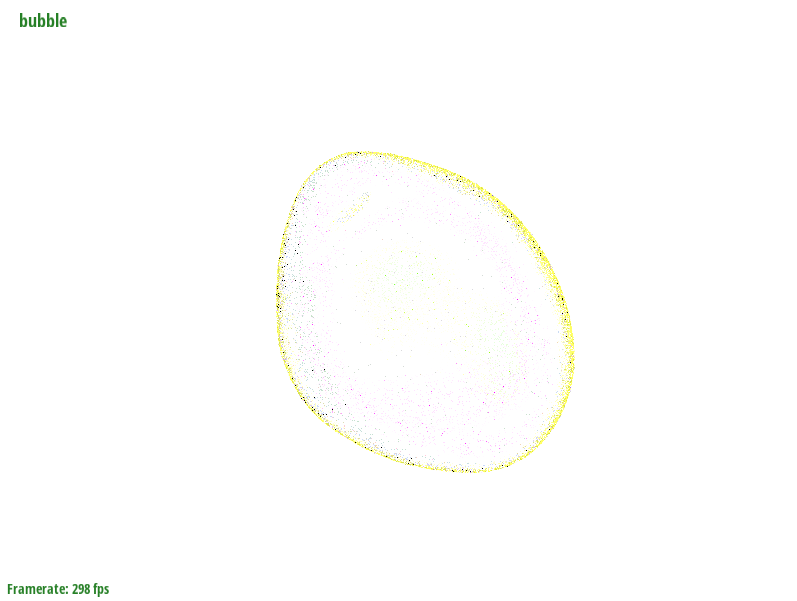
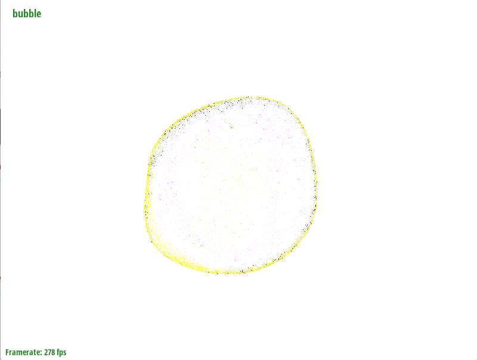
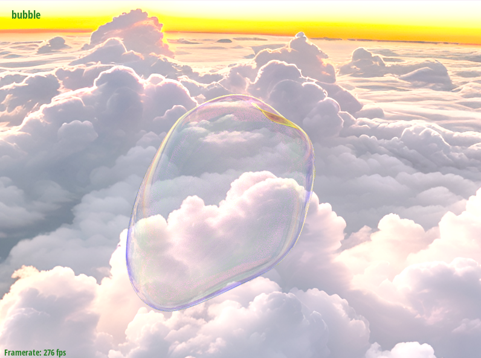
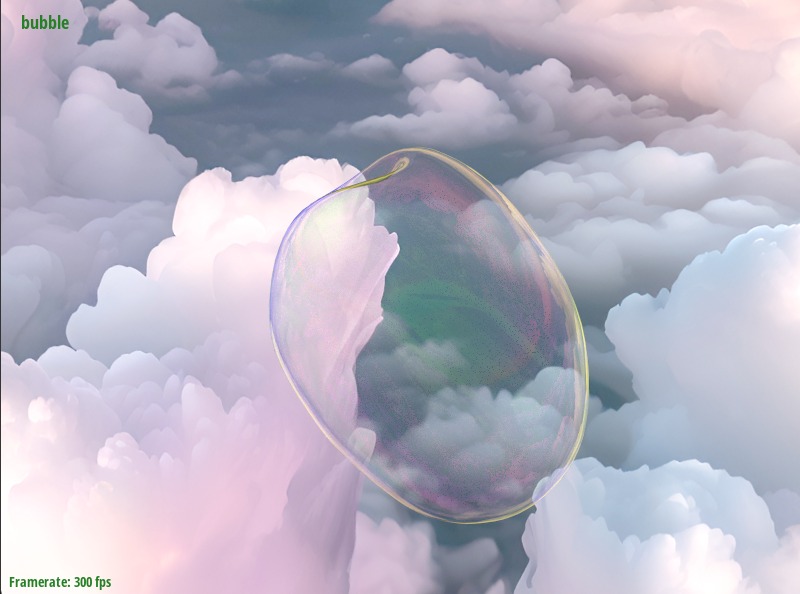

To simluate the film movement over time, we implement a forward kinematics
step that integrates vertex positions from their velocities and updates
the velocities from forces derived from a cotangent-weighted Laplacian operator.
It require building a mass matrix \( M \), a Laplacian matrix \( L \), and a position matrix \( X \), then integrates
forward in time using a semi-implicit scheme.
Let \( n \) denote the number of vertices. Each vertex i has position \( \mathbf{p}_i \)
and velocity \( \mathbf{v}_i \).
We compute a diagonal inverse mass matrix \( \mathbf{M}^{-1} \)
using barycentric area distribution. For a triangular face with
vertices i,j,k, the area contribution is
Each vertex's mass is computed from the sum of one-third of the area of its incident triangles.The inverse mass matrix is computed as:
where \( \text{mass}_i \) is the sum of the areas of adjacent triangles. The factor of 6 accounts for barycentric weighting: each triangle contributes \( \frac{1}{3} \) of its area to each vertex, and the area computation does not account the usual \( \frac{1}{2} \) factor, hence resulting in an overestimation by a factor of 6.
The Laplacian \( \mathbf{L} \) computes smoothing forces using cotangent weights for each edge.
Cotangent weight for edge \((i, j)\) calculation where \(\alpha\) and \(\beta\) are the angles opposite the edge in the two adjacent triangles.:
Individual weights then are inserted symmetrically and diagonals ensure row sums are zero:
We compute accelerations from the Laplacian acting on the position matrix \( \mathbf{X} \) and integrate velocities explicitly. Using timestep \( \Delta t \):
In this explicit Euler process, velocity is updated based on the current acceleration, and the position is then integrated forward using the updated velocity.
Topological operations (edge collapse and split) must handle vertex velocities in a way that preserves momentum and avoids introducing spurious energy.
Given an edge connecting vertices i and j, with masses \( m_i \), \( m_j \) and velocities \( \mathbf{v}_i \), \( \mathbf{v}_j \), collapse yields a new vertex k. The merged position is typically the midpoint:
The new vertex velocity is set by mass-weighted averaging to conserve linear momentum:
This ensures the pre-collision momentum equals the post-collapse momentum:
When splitting edge (i,j), a new vertex k is placed along the edge at fraction \( t \) (0 ≤ t ≤ 1):
The velocity is interpolated equivalently to maintain field smoothness:
For a midpoint split (\( t=0.5 \)): \( \mathbf{v}_k = (\mathbf{v}_i + \mathbf{v}_j)/2 \).
In rendering the bubbles for this project, we extended the HW3 code to incorporate physically accurate thin-film transmission and reflection. A bubble is essentially an extremely thin double surface. When light enters from one side, it can bounce back and forth between the two interfaces. However, because the film is so thin, these internal reflections have little effect on the final exit direction of the light. Therefore, we use Snell’s Law directly to determine the exit angle.
The internal bounces of light within the bubble require accurate physical modeling. This is achieved using Fresnel coefficients, which are complex quantities that describe how the amplitude and phase of the electromagnetic field change for perpendicular and parallel polarizations during a single reflection or transmission event.
The f|3 case is analogous for r12⋅, t12⋅.
The above calculations assume that the Fresnel coefficients correspond only to phase shifts of 0° or 180°. However, this simplification is insufficient for accurately simulating light behavior in thin films. To capture the true interference effects, we must also account for the continuous phase change introduced by the optical path difference within the film. This is represented by the complex factor \(e^{iδ}\), where \(\delta\) is the phase thickness determined by the film’s refractive index, thickness, and the wavelength of light.
Using the computed Fresnel coefficients, we perform an Airy summation to account for the infinite series of reflections within the thin film. Since each successive bounce is scaled by a constant complex factor (\(r_{01}r_{12}e^{i \, 2\delta}\)), this summation can be expressed as a geometric series, leading to the Airy closed-form solution.
From the total polarization amplitudes of reflection and transmission, we can compute the corresponding light intensities by taking \(R^⋅ = | r_{tot}^⋅ |^2\) and \(T^⋅ = ( n_3cos θ_3 / ( n_0cos θ_0 ) ) · | t_{tot}^⋅ |^2\). Finally, assuming the incident light is unpolarized, we obtain the final reflected and transmittedintensities by averaging the results for perpendicular (s) and parallel (p) polarizations \(R = ( R^s + R^p )/2, \quad T = ( T^s + T^p )/2\).
To ensure our bubble bsdf rendering returns the correct color, we construct an RGB wavelength channel and use the helper function we just implemented to obtain the reflectance and transmittance for each RGB wavelength. We then use sRGB weights to calculate the reflected intensity \(w_R\) and transmitted intensity \(w_T\) perceived by the human eye. We then calculate the light reflection probability \(p_R = w_R / (w_T + w_R)\) and use it to determine whether the sample returns reflected or transmitted light.
|
 |
 |
To enhance visual richness and avoid a monotonous background, we implemented a skybox so that bubbles could reflect and refract more varied and realistic colors instead of appearing in a blank scene. We loaded six images, each mapped to one face of the cube, forming a complete surrounding environment. In the view matrix, we set \(v(0,3) = v(1,3) = v(2,3) = 0\) to remove translation while preserving rotation, ensuring that the cube remains stationary relative to the camera and appears infinitely distant.
For path tracing, we created a PathtracingSkybox::sample method that takes a normalized direction vector as input, determines
which cube face this direction intersects, converts it to 2D texture coordinates, and returns the corresponding pixel color from that face.
This method enabling the path tracer to return accurate background colors when rays miss all geometry.
|
 |
 |